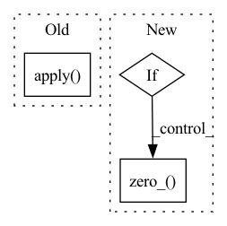

Pattern ID :4952
Before Change
self.linear = nn.Linear(64, num_classes)
self.apply( _weights_init)
def _make_layer(self, block, planes, num_blocks, stride):
strides = [stride] + [1]*(num_blocks-1)
layers = []After Change
self.linear = nn.Linear(64, num_classes)
for m in self.modules():
if isinstance(m, nn.BatchNorm2d):
m.weight.data.fill_(1e-8)
m.bias.data.zero_()
if isinstance(m, nn.Linear) or isinstance(m, nn.Conv2d):
init.kaiming_normal_(m.weight)
def _make_layer(self, block, planes, num_blocks, stride):In pattern: SUPERPATTERN
Frequency: 3
Non-data size: 3
Instances Fragment ID: 17385539
Project Name: lmbxmu/rbnn
Commit Name: 57607e6cac17bb5e05c9225ce34a9885131e5fcf
Time: 2020-06-03
Author: 791411501@qq.com
File Name: imagenet/models_bnn/resnet.py
M Class Name: ResNet
N Class Name: ResNet
M Method Name: __init__(4)
N Method Name: __init__(4)
M Parent Class: nn.Module
N Parent Class: nn.Module
M File Name: imagenet/models_bnn/resnet.py
N File Name: imagenet/models_bnn/resnet.py
M Start Line: 136
M End Line: 136
N Start Line: 128
N End Line: 135
Before Change
X, self.scale, self.zero_point, self.ch_axis,
self.quant_min, self.quant_max, grad_factor)
else:
X = _LearnableFakeQuantizePerTensorOp.apply(
X, self.scale, self.zero_point,
self.quant_min, self.quant_max, grad_factor)
else:
if self.qscheme == torch.per_channel_symmetric or \
self.qscheme == torch.per_channel_affine:
X = torch.fake_quantize_per_channel_affine(After Change
self.scale.data.clamp_(min=self.eps.item())
if self.fake_quant_enabled[0] == 1:
if self.qscheme in (torch.per_channel_symmetric, torch.per_tensor_symmetric):
self.zero_point.data.zero_()
if self.use_grad_scaling:
grad_factor = 1.0 / (X.numel() * self.quant_max) ** 0.5
else: Fragment ID: 17385540
Project Name: pytorch/pytorch
Commit Name: 0c60922fb0614132433779ad45ab8f30783db2ae
Time: 2021-02-03
Author: haichuan@fb.com
File Name: torch/quantization/_learnable_fake_quantize.py
M Class Name: _LearnableFakeQuantize
N Class Name: _LearnableFakeQuantize
M Method Name: forward(2)
N Method Name: forward(2)
M Parent Class: torch.quantization.FakeQuantizeBase
N Parent Class: nn.Module
M File Name: torch/quantization/_learnable_fake_quantize.py
N File Name: torch/quantization/_learnable_fake_quantize.py
M Start Line: 302
M End Line: 337
N Start Line: 127
N End Line: 155
Before Change
self.linear = nn.Linear(64, num_classes)
self.apply( _weights_init)
def _make_layer(self, block, planes, num_blocks, stride):
strides = [stride] + [1]*(num_blocks-1)
layers = []After Change
self.linear = nn.Linear(64, num_classes)
for m in self.modules():
if isinstance(m, nn.BatchNorm2d):
m.weight.data.fill_(1e-8)
m.bias.data.zero_()
if isinstance(m, nn.Linear) or isinstance(m, nn.Conv2d):
init.kaiming_normal_(m.weight)
def _make_layer(self, block, planes, num_blocks, stride): Fragment ID: 17385542
Project Name: lmbxmu/rbnn
Commit Name: 57607e6cac17bb5e05c9225ce34a9885131e5fcf
Time: 2020-06-03
Author: 791411501@qq.com
File Name: cifar/models_bnn/resnet.py
M Class Name: ResNet
N Class Name: ResNet
M Method Name: __init__(4)
N Method Name: __init__(4)
M Parent Class: nn.Module
N Parent Class: nn.Module
M File Name: cifar/models_bnn/resnet.py
N File Name: cifar/models_bnn/resnet.py
M Start Line: 136
M End Line: 136
N Start Line: 128
N End Line: 135